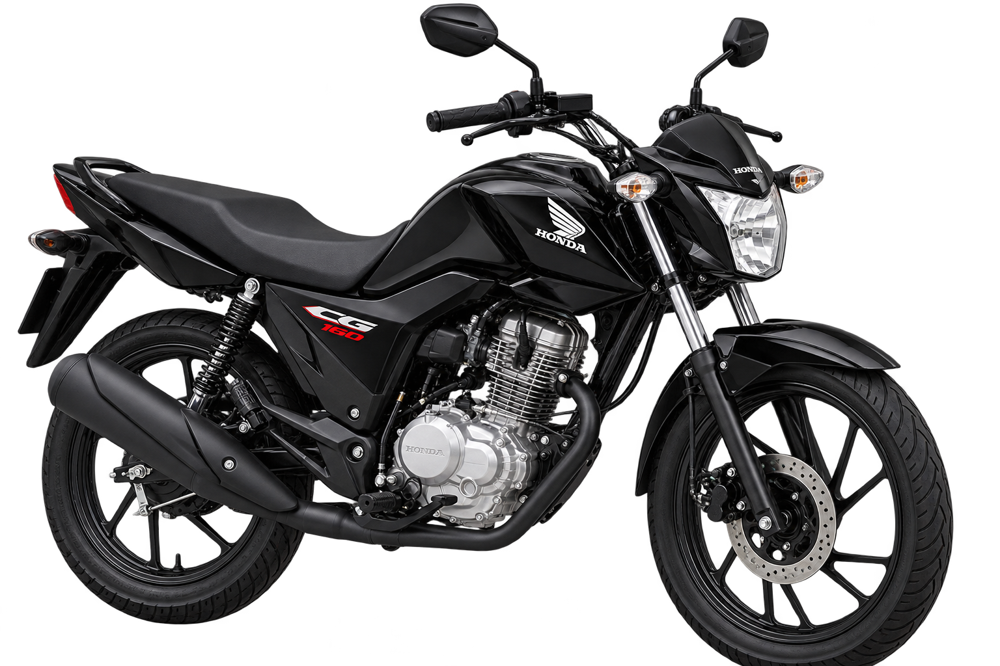

HONDA CG 160 START
Placa: PTM - 3F56

Troca de Óleo
A cada 1.000 km
Hodômetro Inicial
175.325 km
Hodômetro Atual
175.925 km
Quilometragem Rodada
600 / 1.000 km
Faltam 400 km para a próxima troca
Próxima: 176.325 km
Tire uma foto limpa do painel/odômetro da moto. A nossa IA fará a leitura automática dos números para atualizar o progresso.
Orientações de Manutenção
Nível do Óleo
Verifique o nível do óleo semanalmente com a moto desligada e em piso plano.
Pneus e Corrente
Calibre os pneus semanalmente e verifique a lubrificação da corrente de transmissão.
Agendamento de Troca
Ao atingir 900 km rodados, entre em contacto com a locadora para agendar a troca sem custo.